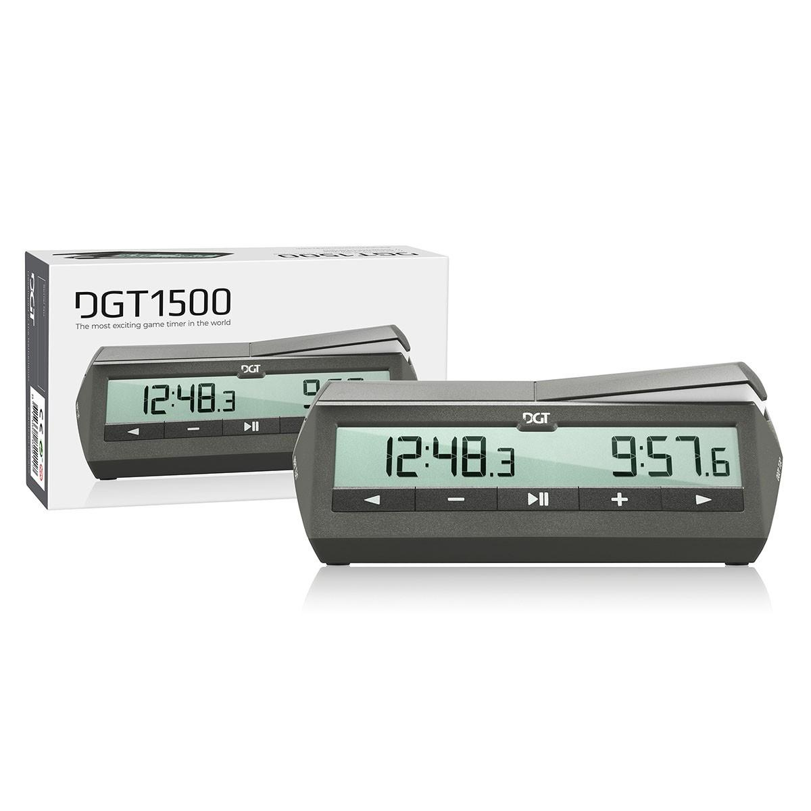
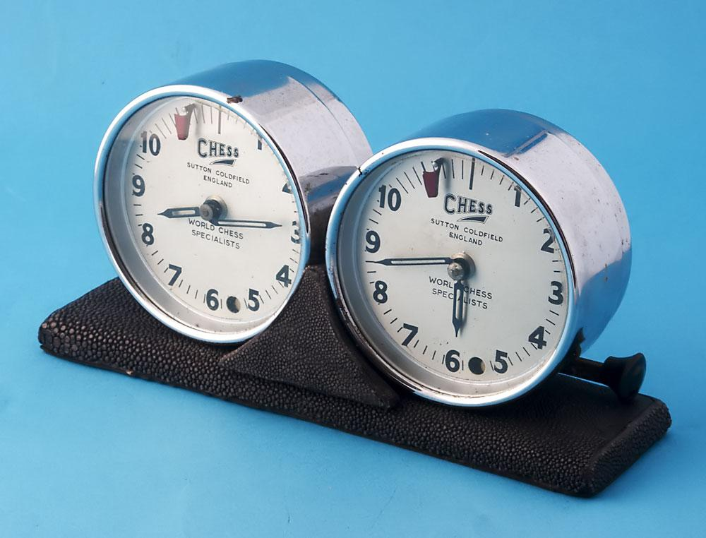
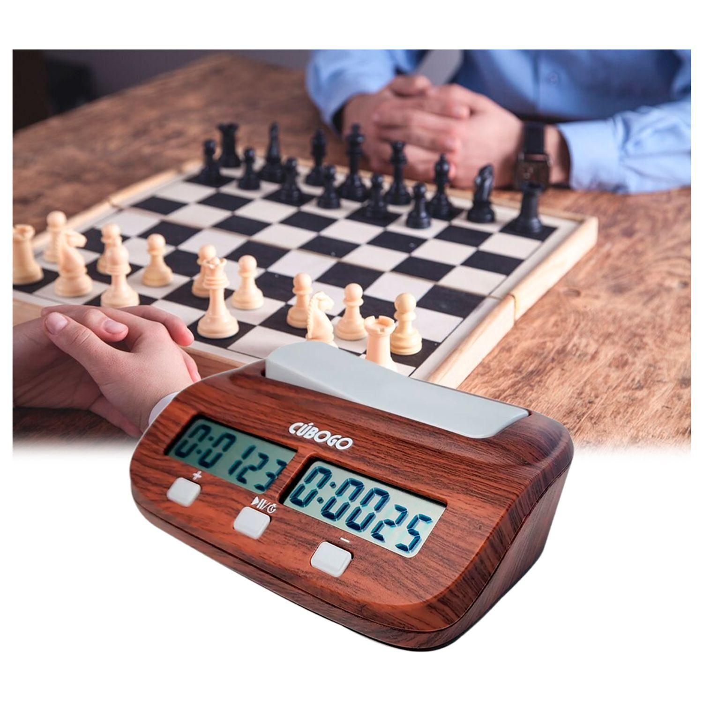
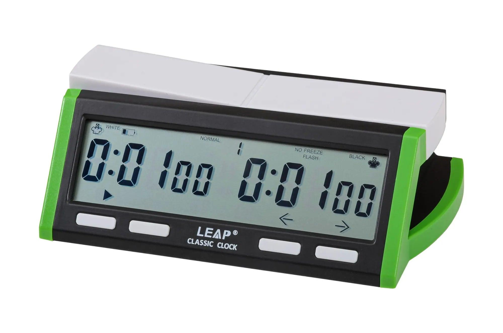
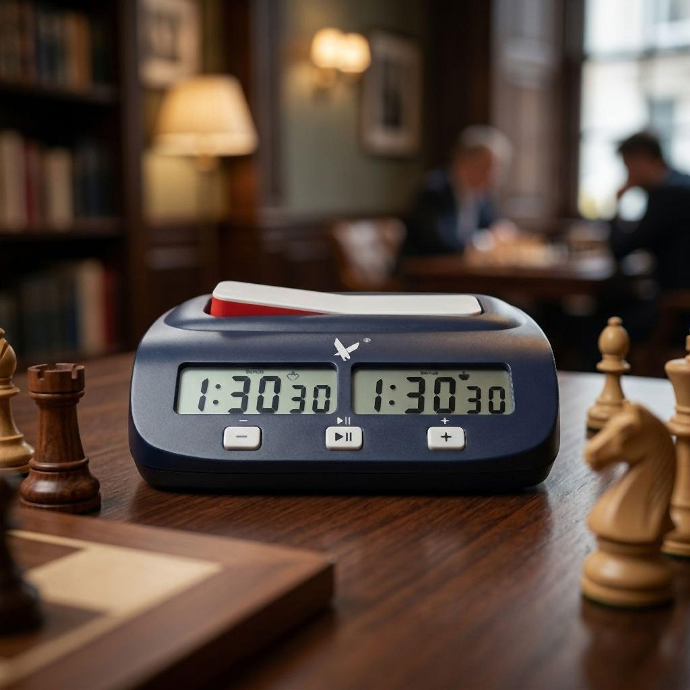
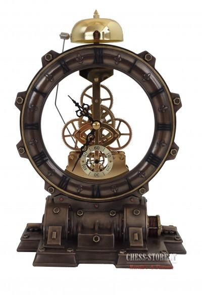

|
 Reloj digital profesionalEl más usado en torneos modernos. Permite controlar el tiempo con precisión y usar modos como incremento o cuenta regresiva. |
 Reloj analógico clásicoEl diseño tradicional del ajedrez competitivo. Funciona con agujas mecánicas y tiene un estilo elegante y vintage. |
 Reloj portátil compactoPequeño, ligero y fácil de transportar. Ideal para estudiantes, viajes o partidas rápidas en cualquier lugar. |

Reloj de lujoFabricado con materiales premium y acabados elegantes. Más decorativo y exclusivo que competitivo. |

Reloj de madera artesanalCombina funcionalidad con diseño artesanal. Muy usado como pieza decorativa o regalo especial. |
 Reloj estilo gamer o modernoDiseños futuristas con iluminación LED y acabados tecnológicos que atraen a jugadores jóvenes. |
 Reloj oficial para torneos FIDEModelos aprobados para competencias profesionales y campeonatos internacionales. |
 Reloj temático o coleccionableRelojes inspirados en estilos medievales, steampunk o diseños artísticos únicos para coleccionistas. |